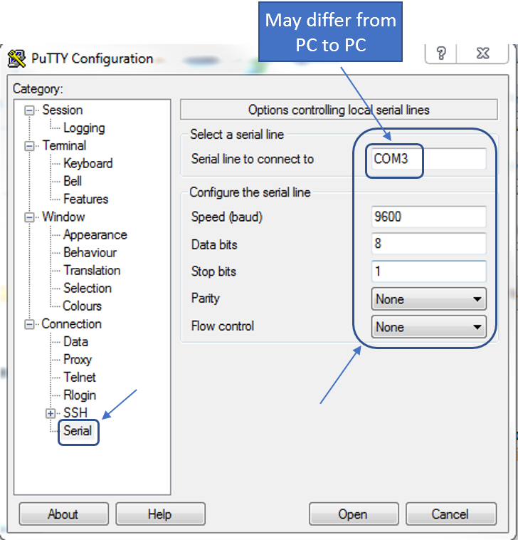
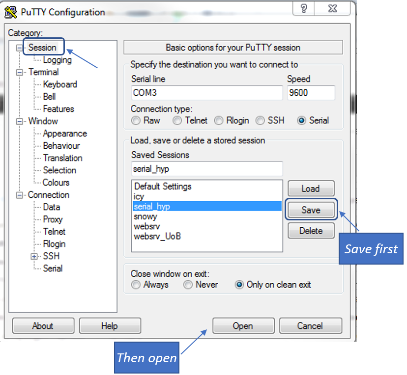
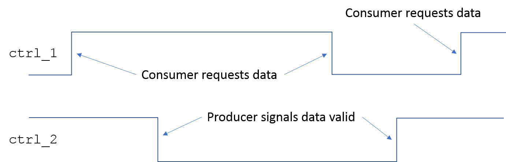

|
|
|
The RS-232 serial communication protocol is a popular protocol for asynchronous transmission, when two communicating modules do not share the same clock. While it has been superseded for some applications by the USB standard, it is still widely used in others. Figure 3.1 illustrates the components used in the RS-232 serial connection in this assignment.
There are separate data lines for receiving and transmitting and hence the link is capable of full duplex transmission. While there is only one signal line for data transmission in each direction, the actual protocol includes some other signal lines, such as ground and control signals. These other signal lines do not need to concern us, nor issues related to the physical part of the standard, such as voltage levels, as the interface circuitry takes care of the actual signalling. What is available on the FPGA is access to two pins, one for transmitting and one for receiving. The data on these pins follows the protocol shown in Figure 3.2.
An RS232 frame consists of at least 10 bits, a start bit, a byte of data, and a stop bit. Additionally the standard also allows for a parity bit for error detection, but we will not use parity. For historical reasons, when the line is idle, the voltage is kept high, at logic '1'. To signify the start of a frame, the line is brought low. Afterwards, the line is driven high or low depending on the value of the bits in the byte. This is followed by a stop bit of logic '1'. The line is operated at a pre-agreed frequency, which is the baud rate of the line. This can be set to many values (for example Windows supports anything from 110 upto 921600), and we will work with a baud rate of 9600 symbols per second. As we are dealing with binary voltages, the baud rate is identical to the bit rate.
The actual serial connection between the development board and the PC is a micro USB cable. Wrappers on both sides allow us to simply concentrate on the RS-232 signalling protocol.
You are provided with VHDL code for Rx and Tx modules that implement this protocol and are designed to run on a 100 MHz clock, to use on the FPGA side. These modules access two pins which are connected to the transmitting and receiving lines on the serial links. Their usage is demonstrated by a simple design that simply echoes whatever you type in the terminal emulation window. This whole source code bundle is in a zip archive named "uart_rx_tx_stripped.zip". It also includes the pin configuration file and the Xilinx project file. You should be able to start a Vivado project, synthesise, route and map the design and generate a bit file to be downloaded into the FPGA as described in Section 8.
While you don't need to understand the implementation details of the Tx and Rx modules to use them, it is strongly recommended that you study them as examples of good design practice. The Tx module code has been downloaded from the Digilent (manufacturers of the CMOD A7 board) website. The Rx module code was developed especially for this module, and illustrates the preferred way of describing a state machine, with a combinational logic block for determination of next state values, and a sequential state register block that updates its state on every clock cycle. Various other processes control timing and implement local controls, and manage the output signals. It also shows the sort of naming convention you should adopt, the mix of lower-case and upper-case letters for various objects to improve readability even though VHDL is case-insensitive, and the selective use of underscore ("_"). It also demonstrates modularity, with the task of a given process clearly defined. You should also note how each self-contained block of code (for example a process) is relatively short. If you find that you are writing pages upon pages of code in a single body, there may be a better (more efficient, more readable) way to implement your design.
On the PC the UART hardware is standard. To open a serial link to the FPGA, you will use a terminal emulation utility called PuTTY. PuTTY is available on the lab PCs but can be downloaded from http://www.putty.org/ (click on the first link). Once PuTTY is open you should see the window of Figure 3.3.

Select the "Serial" category as highlighted and set the parameters as shown on the right. Do not click on "Open" yet.
In order to avoid having to set the parameters each time you open the terminal, you can save these settings. Once you have edited the fields according to Figure 3.3, click on "Session" as shown in Figure 3.4, and give a suitable name (for example "serial_hyp"). Next time you open PuTTY, simply select the saved configuration, click on "Load" and your saved settings will appear. Afterwards click on "Open".

The VT100 terminal was a video terminal manufactured in the late 70's and early 80's by DEC that was very popular, and quickly became the de facto standard for terminal behaviour. The term is now commonly used for a terminal that emulates the behaviour of the original terminal. The VT100 terminal uses the 7-bit ASCII code for character representation. Clearly, 7 bits allow 128 characters to be represented. Of these the first 32 (from 0 to 31) are non-printable control codes and are used for various control actions. The remaining 96 (from 32 to 127) are the printable set available on most keyboards. Given in Table 3.1 are the printable ASCII characters.
The control characters are given in Table 3.2. Specific sequences of these control characters can be used to control display characteristics in the VT100 terminal, such as turn underlining on, change font colour, clear formatting etc.
Asynchronous communication between two modules is accomplished by what is known as a handshaking protocol, which is a cycle of request and acknowledge between the two modules on dedicated control lines. Both four-phase and two-phase protocols are widely used. Four phase protocols are commonly return-to-zero, i.e. a control line conveys information by being taken high (logic '1'), and then returning to the low value (logic '0'). The receiving module therefore needs to monitor for the logic value on the control line. By contrast, two-phase protocols are non-return-to-zero, i.e. any transition, whether from low to high or high to low, conveys some information.
We will use a two-phase handshaking protocol for this assignment for communication between the Data Generator and the Data Processor, which is implemented by two control signals ctrl_1 and ctrl_2 as shown in Figure 4.1. Rather than absolute values on the control lines, information is conveyed by transitions. As shown, the data acquisition module makes a request by effecting a transition on its output control line ctrl_1. The data generation module monitors activity on this line, and fetches a new byte, makes it available on the data lines, and effects a transition on its output control line ctrl_2. This transition is the signal for the data acquisition module that the data available on the data lines are valid. When it needs a new byte of data, it makes another transition on its output control line, this time from '0' to '1'. When the data generator is ready with the new word, it fetches the new byte. Until a new request is made, the old data has to be maintained on the data lines.

The data source supplied to you in the source code bundle for the Assignment will supply bytes without limit upon request. After 500 bytes the pattern will repeat.
|
|
|